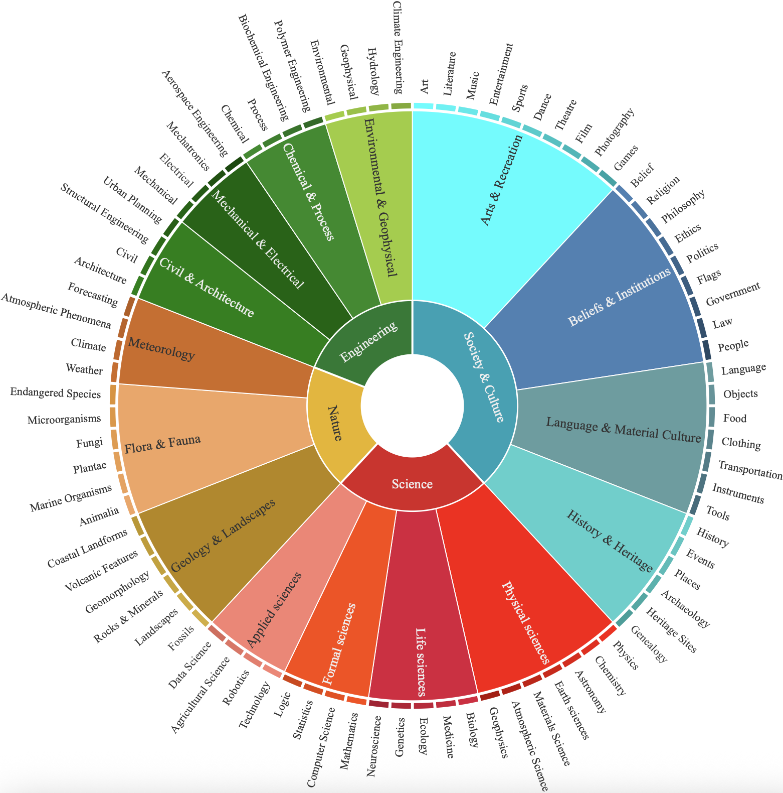
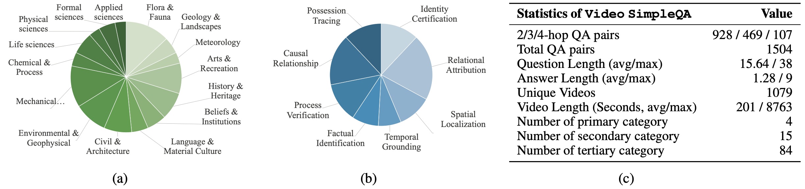
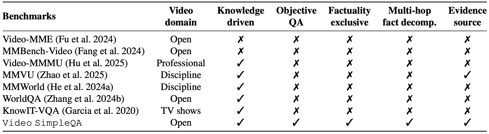

This leaderboard is sorted by F-score. To view other sorted results, please click on the corresponding cell.
Data Category

The taxonomy of Video SimpleQA benchmark.
Statistics

(a) Video distribution at the secondary level; (b) Question type distribution; (c) Key statistics of Video SimpleQA.
Benchmark Comparison

Comparisons with existing video benchmarks regarding the video domain, their knowledge-driven focus, emphasis on factuality, and provision of supporting evidence.
Construction Pipeline

An overview of the construction pipeline of Video SimpleQA including the video & encyclopedia collection, QA annotation and quality control.